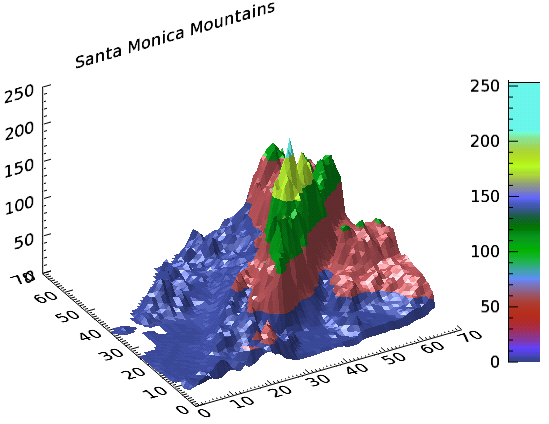
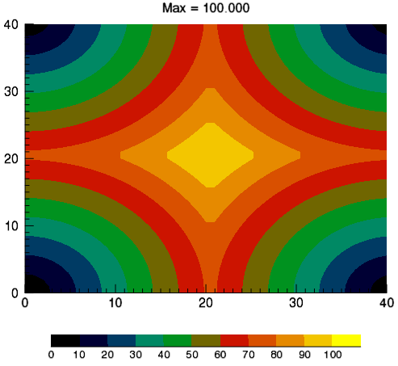
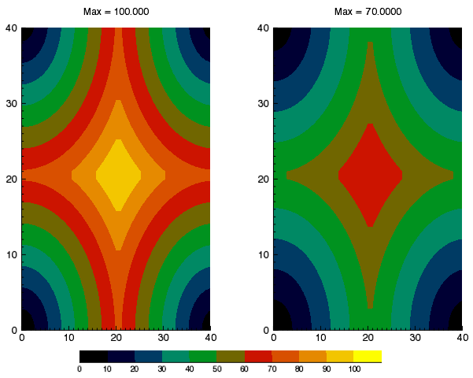

You can add a colorbar to a graphic. Colorbars show the minimum to maximum pixel values on a color scale.
See the following sections:
The following example shows a digital elevation model (DEM) taken from the Santa Monica mountains in California. The colors in the graphic are determined by the RGB_TABLE, which the COLORBAR function uses to create the color scale.

The code shown below creates the graphic shown above. You can copy the entire block and paste it into the IDL command line to run it.
; Define the data
file = FILE_WHICH('elevbin.dat')
dem = READ_BINARY(file, data_dims=[64,64])
; Display the data.
c1 = CONTOUR(dem, $
RGB_TABLE=30, $
/FILL, $
PLANAR=0, $
TITLE='Santa Monica Mountains')
; Add the colorbar.
cbar = COLORBAR(TARGET = c1, ORIENTATION=1, $
POSITION=[0.90, 0.2, 0.95, 0.75])
; Move the Z Axis to the back.
(c1['zaxis']).location = [0, (c1.yrange)[1], 0]
You can display a colorbar that matches discrete contour levels.
The following example shows a simple contour image generated from the DIST function. The colors in the graphic are determined by the RGB_TABLE, which the COLORBAR function uses to create the color scale.

The code shown below creates the graphic shown above. You can copy the entire block and paste it into the IDL command line to run it.
; Example function to plot with
; a range of [0,100].
d = DIST(41)
fmax = 100.0
f = d / max(d) * fmax
; Set 11 contour levels:
; [0, 10, 20, ... 100].
n_levels = 11
levels = FINDGEN(n_levels)/(n_levels-1)*fmax
; Make a step color table for the
; contour plot. The color table
; 'step_ct' is a [256,3] array, but
; there are only 11 distinct colors.
; The indices into the color tables
; (both original and step) are contour
; levels interpolated to the range
; of color table indices (the byte
; range).
ct_number = 4
ct_indices = BYTSCL(levels)
LOADCT, ct_number, RGB_TABLE=ct, /SILENT
step_ct = CONGRID(ct[ct_indices, *], 256, 3)
; Display the example function using
; the step color table and the
; interpolated indices.
c1 = CONTOUR(f, $
c_value = levels, $
RGB_TABLE = step_ct, $
RGB_INDICES = ct_indices, $
/FILL, $
MARGIN = [0.15, 0.20, 0.15, 0.15], $
TITLE = 'Max = ' + strtrim(fmax,2), $
WINDOW_TITLE = 'Discrete Colorbar Example')
; The colorbar needs n_levels+1 ticks to make
; labels line up correctly.
; Append empty string.
tick_labels = [STRTRIM(FIX(levels), 2), '']
cb = COLORBAR( $
TARGET = c1, $
TICKLEN = 0, $
MAJOR = n_levels+1, $
TICKNAME = tick_labels, $
FONT_SIZE = 10, $
POSITION = [0.2, 0.07, 0.8, 0.1])
The following example shows two simple contour images generated from the DIST function, annotated with one colorbar.

The code shown below creates the graphic shown above. You can copy the entire block and paste it into the IDL command line to run it.
; Example functions to plot. The first (f1) has a
; range of [0,100], the second (f2) a range of [0,70].
d = DIST(41)
max1 = 100.0
max2 = 70.0
f1 = d / max(d) * max1
f2 = d / max(d) * max2
; Explicitly set 11 contour levels: [0, 10, 20, ... 100].
n_levels = 11
levels = FINDGEN(n_levels)/(n_levels-1)*max1
; Make a step color table for the first contour plot.
; The color table STEP_CT is a [256,3] array, but there
; are only n_levels=11 distinct colors (to check, load
; and view the color table in XPALETTE). The indices into
; the color tables (both original and step) are contour
; levels interpolated to the range of color table indices
; (i.e., the byte range).
ct_number = 4
ct_indices = BYTSCL(levels)
LOADCT, ct_number, RGB_TABLE = ct, /SILENT
step_ct = CONGRID(ct[ct_indices, *], 256, 3)
; Display the first function using the step color
; table and the interpolated indices.
c1 = CONTOUR(f1, $
LAYOUT = [2,1,1], $
C_VALUE = levels, $
RGB_TABLE = step_ct, $
RGB_INDICES = ct_indices, $
/FILL, $
TITLE = 'Max = ' + strtrim(max1,2), $
WINDOW_TITLE = 'Discrete Colorbar Example')
; Display the second function using the original color
; table and the interpolated indices.
c2 = CONTOUR(f2, $
LAYOUT = [2,1,2], $
/CURRENT, $
C_VALUE = levels, $
RGB_TABLE = ct_number, $ ; compare with c1
RGB_INDICES = ct_indices, $
/FILL, $
TITLE = 'Max = ' + strtrim(max2,2))
; Display colorbar with first contour plot as a
; target. It needs n_levels + 1 ticks to make labels
; line up correctly.
tick_labels = [STRTRIM(FIX(levels), 2), '']
cb = COLORBAR( $
TARGET = c1, $
TICKLEN = 0, $
MAJOR = n_levels+1, $
TICKNAME = tick_labels, $
FONT_SIZE = 8, $
POSITION = [0.2, 0.06, 0.8, 0.09])
RGB_TABLE
- defines the color table used to display the image. COLORBAR uses the colors defined in this property.
FILL
- specifies that the contour is filled. This keyword uses the colors defined in
RGB_TABLE.
PLANAR
- PLANAR = 0 displays the graphic in three-dimensional space rather than on a plane. The default is PLANAR=1, which displays a graphic on a plane.
TITLE
- defines the title of the view rather than the graphic.
ORIENTATION
- ORIENTATION =1 defines a vertical colorbar direction. The default orientation is 0, which is horizontal.
POSITION
- defines the location of the colorbar in a four-element vector: [X1, Y1, X2, Y2], defining the lower left and upper right corners of the image portion of the colorbar.